■元のページへ戻る
■元のページへ戻る
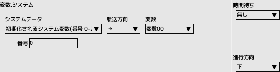
システム
システムが使用している内容を変数に読み書きします
リードオンリーが付いているものは読み込み専用です
転送方向で読み込み、書き込みを切り替えます
- 初期化されるシステム変数
番号を0～255で指定
- 保存されるシステム変数
番号を0～255で指定
- 画面内の早回し対象キャラ数(リードオンリー)
キャラクタ編集のアトリビュートフラグ「早回し対象」をチェックしているキャラクタ数をカウントします
出現しているキャラクタ全てをカウントします
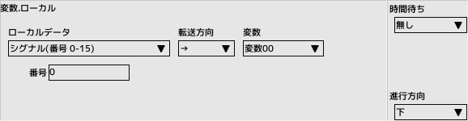
ローカル
主にキャラクタやプレイヤーが保持している内容を変数に読み書きします
リードオンリーが付いているものは読み込み専用です
転送方向で読み込み、書き込みを切り替えます
- シグナル(番号 0-15)
キャラクタが保持しているシグナルデータ
- X座標
キャラクタの絶対座標X
- Y座標
キャラクタの絶対座標Y
- X移動量(x100)
キャラクタの移動量(内部)Xの100倍
- Y移動量(x100)
キャラクタの移動量(内部)Yの100倍
- ゲージ値(番号 0-2)
プレイヤーが保持するゲージ値
- 体力
キャラクタの体力
- 最大体力
キャラクタの体力の初期値
- ボム数
プレイヤーが保持するボム数
- 残機
プレイヤーが保持する残機
- スコア
プレイヤーが保持するスコア
- 壁の中にいるか？(リードオンリー)
キャラクタが壁の当たり判定の中にいるか? 0..いない 1..いる
- 自機タイプ
プレイヤー選択の結果をセットする
- 速度レベル
プレイヤーの速度レベル
- コンティニュー回数
プレイヤーが保持する残りコンティニュー回数
- メインウエポンインデックス
プレイヤーが使用中のメインウエポン
- サブウエポンインデックス
プレイヤーが使用中のサブウエポン
- ボンバーインデックス
プレイヤーが使用中のボンバー
- オプションインデックス
プレイヤーが使用中のオプションウエポン
- カウンターインデックス
プレイヤーが使用中のカウンターウエポン
- メインウエポンレベル
プレイヤーの武器レベル
- サブウエポンレベル
プレイヤーの武器レベル
- ボンバーレベル
プレイヤーの武器レベル
- オプションレベル
プレイヤーの武器レベル
- カウンターレベル
プレイヤーの武器レベル
- 移動方向 0～65535
移動している方向、0～360度を0～65535に変換した値
- 画像方向 0～65535
画像が向いている方向、0～360度を0～65535に変換した値
- 攻撃力
キャラクタの保持する攻撃力
- 防御力
キャラクタの保持する防御力
- 速度(x100)
キャラクタの移動量の100倍
- 子の時の絶対座標X（リードオンリー）
子の時の画面内絶対座標X
- 子の時の絶対座標Y（リードオンリー）
子の時の画面内絶対座標Y
- 拡大率(65536=等倍)
キャラクタの拡縮率、大きいと拡大
- 子の時の絶対移動量X（x100、リードオンリー）
子の時の対画面移動量Xの100倍
- 子の時の絶対移動量Y（x100、リードオンリー）
子の時の対画面移動量Yの100倍
- 子の時の絶対移動方向（0～65535、リードオンリー）
子の時の対画面移動方向、0～360度を0～65535に変換した値
- 当たり判定表示
0以外の時、表示ONになります
- ネームエントリー中か？（リードオンリー）
ランキング画面でネームエントリー中なら0以外
- 攻撃判定ビット
ビットの内容は、キャラクタ編集のカスタム編集画面に表示される攻撃側の項目一つが1ビットになります
- 防御判定ビット
ビットの内容は、キャラクタ編集のカスタム編集画面に表示される防御側の項目一つが1ビットになります
- ランキング 付加情報A(初期値..0)
ランキングへ表示するための付加情報A
- ランキング 付加情報B(初期値..0)
ランキングへ表示するための付加情報B
- ランキング 付加情報C(初期値..0)
ランキングへ表示するための付加情報C
- リプレイID(初期値..-1)
リプレイIDを指定して保存します。同一IDのスコアは消去されます
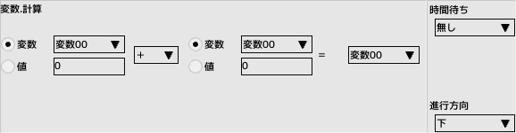
計算
四則演算、シフト演算、論理演算を行います
全て符号付きで演算します
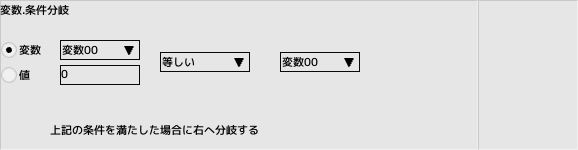
条件分岐
変数と変数、もしくは数値を比較し、条件が成立していれば右へ分岐します
- 変数
比較する変数を指定
- 数値
比較する数値を指定
- 条件
上二つを比較し、条件が成立していれば右へ分岐します
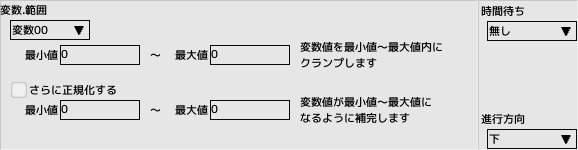
範囲
変数の内容をクランプ、正規化します
- 最小値、最大値
クランプする値を指定
- さらに正規化する
正規化したい場合はチェックします
- 最小値、最大値
正規化する値を指定
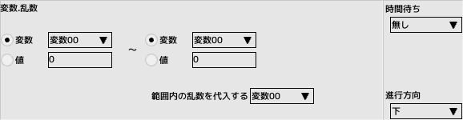
乱数
指定範囲の乱数を変数に取得します
- 範囲指定
変数もしくは数値で範囲指定します
- 範囲内の乱数を代入する
乱数を取得する変数を指定
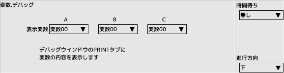
デバッグ
変数の内容をデバッグウインドウへ表示します
- 変数A,B,C
3つまで同時に表示できます
- 無効化
出力をOFFにします
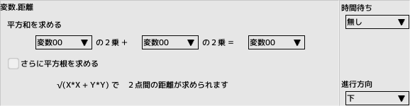
距離
2点間の距離を求めます
- さらに平方根を求める
距離が欲しい場合はチェックします
キャラAとキャラBの距離を求める時は
√((AX-BX)の2乗 + (AY-BY)の2乗)
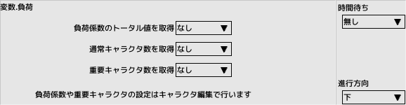
負荷
出現中のキャラクタの情報を取得します
- 負荷係数のトータル値を取得
キャラクタ編集で設定した負荷係数
- 通常キャラクタ数を取得
キャラクタ編集のアトリビュートフラグ「重要キャラクタ」がチェックされていない
- 重要キャラクタ数を取得
キャラクタ編集のアトリビュートフラグ「重要キャラクタ」がチェックされている
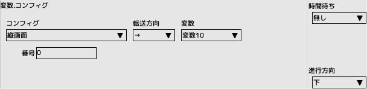
コンフィグ
コンフィグの内容を変数に読み書きします
リードオンリーが付いているものは読み込み専用です
転送方向で読み込み、書き込みを切り替えます
- パッド(ボタン番号)
機能ボタンに割り当てるパッドのボタンや方向
- キーボード(ボタン番号)
機能ボタンに割り当てるキー
- 言語(デフォルト ... -1)
言語設定の切り替え
- BGMボリューム(0～100)
BGMの音量
- SEボリューム(0～100)
効果音の音量
- ウインドウ倍率(0～4)
ウインドウサイズ
- V-Sync
遅延に影響します
- フルスクリーン
全画面表示
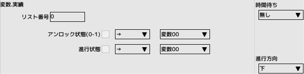
実績
ゲーム設定のSTEAM連動が有効時に実績のアンロック状態と、進行状態を受信、送信します
毎フレーム送信し続けるようなことは避けてください
- リスト番号
ゲーム設定の実績リストのインデックス
- アンロック状態(0-1)
実績がアンロックされている場合は1、そうで無い場合は0
- 進行状態
実績の解除に途中経過がある場合の値を取得or設定します
- チェックを入れ、項目を有効化してから転送方向を設定してください
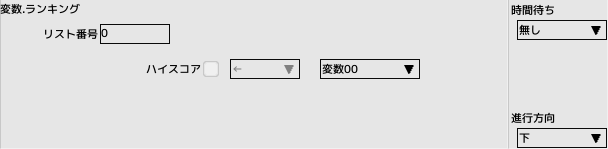
ランキング
ゲーム設定のSTEAM連動が有効時にハイスコアを送信します
毎フレーム送信し続けるようなことは避けてください
- リスト番号
ゲーム設定のランキングリストのインデックス
- ハイスコア
ハイスコアを送信します
- チェックを入れ、項目を有効化してください
転送
変数（キャラクタ）やシステム変数の間でまとめて値を転送することが出来ます
- 転送元・転送先
変数のタイプを選択します
- 番号
変数のタイプにより範囲が異なります
- 子ID
変数タイプが子の時に指定
- インデックス
指定した変数の番号に加算する場合、チェックを入れます
加算に用いる変数を指定します
- 個数
転送する変数の数を入力します
インデックスにループ変数を指定すると、ループ処理の中で変数を順に参照することが可能になります
■ページ上部へ戻る